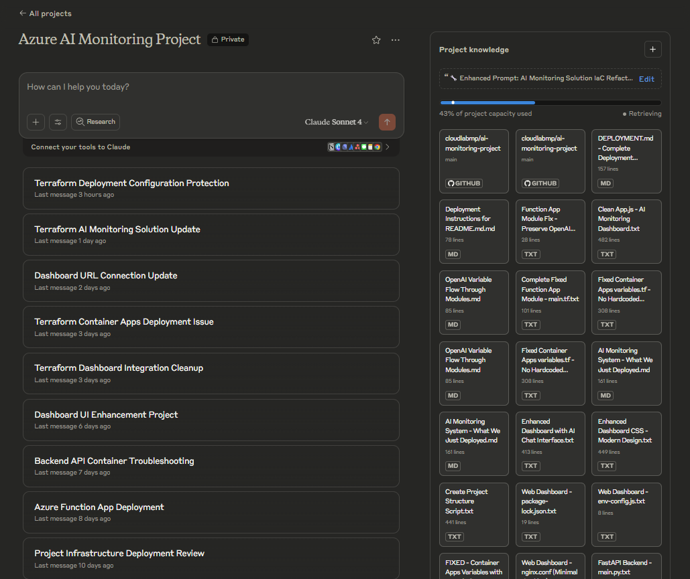

üî• Vibe Coding My Way to AI Connected Infra: Claude, Terraform & Cloud-Native Monitoring
üìñ TL;DR ‚Äì What This Post Covers
- How I used AI tools to build an Azure-based monitoring solution from scratch
- Lessons learned from developing two full versions (manual vs. Terraform)
- The good, bad, and wandering of GenAI for infrastructure engineers
- A working, cost-effective, and fully redeployable AI monitoring stack
Introduction
This project began, as many of mine do, with a career planning conversation. During a discussion with ChatGPT about professional development and emerging skill areas for 2025, one suggestion stuck with me:
"You should become an Infrastructure AI Integration Engineer."
It’s a role that doesn’t really exist yet — but probably should.
What followed was a journey to explore whether such a role could be real. I set out to build an AI-powered infrastructure monitoring solution in Azure, without any formal development background and using nothing but conversations with Claude. This wasn’t just about building something cool — it was about testing whether a seasoned infra engineer could:
- Use GenAI to design and deploy a full solution
- Embrace the unknown and lean into the chaos of LLM-based workflows
- Create something reusable, repeatable, and useful
The first phase of the journey was a local prototype using my Pi5 and n8n for AI workflow automation (see my previous post for that). It worked — but it was local, limited, and not exactly enterprise-ready.
So began the cloud migration.
Why this project mattered
I had two goals:
- ✅ Prove that “vibe coding” — using GenAI with limited pre-planning — could produce something deployable
- ✅ Build a portfolio project for the emerging intersection of AI and infrastructure engineering
This isn’t a tutorial on AI monitoring. Instead, it’s a behind-the-scenes look at what happens when you try to:
- Build something real using AI chat alone
- Translate a messy, manual deployment into clean Infrastructure as Code
- Learn with the AI, not just from it
The Terraform modules prove it works.
The chat logs show how we got there.
The dashboard screenshots demonstrate the outcome.
The next sections cover the journey in two parts: first, the vibe-coded v1; then the Terraform-powered refactor in v2.
üìö Table of Contents
- Introduction
- üìö Table of Contents
- Part 1: The Prototype
- Version 1: The Manual Deployment Marathon
- Platform and GenAI Choices
- üß± Phase 1: Foundation
- ü߆ Phase 2: Intelligence Layer
- üé® Phase 3: The User Experience
- üåç Part 2: Why Terraform? Why Now?
- ü߆ Part 3: Working with GenAI ‚Äì The Good, the Bad, and the Wandering
- üèóÔ∏è Part 4: Building the Stack ‚Äì What Got Built
- üßæ Part 5: The Result - A Portable, Reusable AI Monitoring Stack
- ü߆ Part 6: Reflections and Lessons Learned
- ✅ Conclusion
Part 1: The Prototype
(Stage 1 – Manual AI-Assisted Deployment) The Birth of a Vibe-Coded Project
The project didn’t start with a business requirement — it started with curiosity. One evening, mid-career reflection turned into a late-night conversation with ChatGPT:
"You should become an Infrastructure AI Integration Engineer."
I’d never heard the term, but it sparked something. With 20+ years in IT infrastructure and the growing presence of AI in tooling, it felt like a direction worth exploring.
The Thought Experiment
Could I — an infrastructure engineer, not a dev — build an AI-driven cloud monitoring solution:
- End-to-end, using only AI assistance
- Without dictating the architecture
- With minimal manual planning
The rules were simple:
- ❌ No specifying what resources to use
- ❌ No formal design documents
- ✅ Just tell the AI the outcome I wanted, and let it choose the path
The result: pure "vibe coding." Or as I now call it: AI Slop-Ops.
What is Vibe Coding (a.k.a. Slop-Ops)?
For this project, "vibe coding" meant:
- ü§ñ Generating all infrastructure and app code using natural language prompts
- ü߆ Letting Claude decide how to structure everything
- ü™µ Learning through experimentation and iteration
My starting prompt was something like:
"I want to build an AI monitoring solution in Azure that uses Azure OpenAI to analyze infrastructure metrics."
Claude replied:
"Let’s start with a simple architecture: Azure Container Apps for the frontend, Azure Functions for the AI processing, and Azure OpenAI for the intelligence. We'll build it in phases."
That one sentence kicked off a 4–5 week journey involving:
- ~40‚Äì50 hours of evening and weekend effort üßµ
- Dozens of chats, scripts, and browser tabs
- An unpredictable mix of brilliance and bafflement
And the whole thing started to work.
Version 1: The Manual Deployment Marathon
The first build was fully manual — a mix of PowerShell scripts, Azure portal clicks, and Claude-prompting marathons. Claude suggested a phased approach, which turned out to be the only way to keep it manageable.
üí¨ Claude liked PowerShell. I honestly can‚Äôt remember if that was my idea or if I just went along with it. ü§∑‚Äç‚ôÇÔ∏è
Platform and GenAI Choices
üåê Why Azure?
The platform decision was pragmatic:
- I already had a Visual Studio Developer Subscription with £120/month of Azure credits.
- Azure is the cloud provider I work with day-to-day, so it made sense to double down.
- Using Azure OpenAI gave me hands-on experience with Azure AI Foundry – increasingly relevant in modern infrastructure roles.
In short: low cost, high familiarity, and useful upskilling.
ü߆ Why Claude?
This project was built almost entirely through chat with Claude, Anthropic’s conversational AI. I’ve found:
✅ Claude is better at structured technical responses, particularly with IaC and shell scripting.
❌ ChatGPT tends to hallucinate more often in my experience when writing infrastructure code.
But Claude had its own quirks too:
- No memory between chats — every session required reloading context.
- Occasional focus issues — drifting from task or overcomplicating simple requests.
- Tendency to suggest hardcoded values when debugging — needing constant vigilance to maintain DRY principles.
⚠️ Reality check: Claude isn't a Terraform expert. It's a language model that guesses well based on input. The human still needs to guide architecture, validate outputs, and ensure everything actually works.
ü§ñ Prompt Engineering Principles
I used a consistent framework to keep Claude focused and productive:
- ROLE: Define Claude's purpose (e.g., “You are a Terraform expert”)
- INPUT: What files or context is provided
- OUTPUT: What should Claude return (e.g., a module, refactored block, explanation)
- CONSTRAINTS: e.g., “No hardcoded values”, “Use locals not repeated variables”
- TASK: Specific action or generation requested
- REMINDERS: Extra nudges — “Use comments”, “Output in markdown”, “Use Azure CLI not PowerShell”
This approach reduced misunderstandings and helped prevent “solution drift” during long iterative sessions.
üß± Phase 1: Foundation
This first phase set up the core infrastructure that everything else would build upon.
üîß What Got Built
- Resource Groups – Logical container for resources
- Storage Accounts – Persistent storage for logs, state, and AI interaction data
- Log Analytics Workspace – Centralized logging for observability
- Application Insights – Telemetry and performance monitoring for apps
These services created the backbone of the environment, enabling both operational and analytical insight.
üñ•Ô∏è PowerShell Verification Script
This example script was used during v1 to manually verify deployment success:
# Verify everything is working
Write-Host "üîç Verifying Step 1.1 completion..." -ForegroundColor Yellow
# Check resource group
$rg = Get-AzResourceGroup -Name "rg-ai-monitoring-dev" -ErrorAction SilentlyContinue
if ($rg) {
Write-Host "✅ Resource Group exists" -ForegroundColor Green
} else {
Write-Host "❌ Resource Group not found" -ForegroundColor Red
}
# Check workspace
$ws = Get-AzOperationalInsightsWorkspace -ResourceGroupName "rg-ai-monitoring-dev" -Name "law-ai-monitoring-dev" -ErrorAction SilentlyContinue
if ($ws -and $ws.ProvisioningState -eq "Succeeded") {
Write-Host "✅ Log Analytics Workspace is ready" -ForegroundColor Green
} else {
Write-Host "❌ Log Analytics Workspace not ready. State: $($ws.ProvisioningState)" -ForegroundColor Red
}
# Check config file
if (Test-Path ".\phase1-step1-config.json") {
Write-Host "✅ Configuration file created" -ForegroundColor Green
} else {
Write-Host "❌ Configuration file missing" -ForegroundColor Red
}
ü߆ Phase 2: Intelligence Layer
With the foundation in place, the next step was to add the brainpower — the AI and automation components that turn infrastructure data into actionable insights.
üß© Key Components
- Azure OpenAI Service
- Deployed with
gpt-4o-minito balance cost and performance -
Powers the natural language analysis and recommendation engine
-
Azure Function App
- Hosts the core AI processing logic
- Parses data from monitoring tools and feeds it to OpenAI
-
Returns interpreted insights in a format suitable for dashboards and alerts
-
Logic Apps
- Automates data ingestion and flow between services
- Orchestrates the processing of logs, telemetry, and alert conditions
- Acts as glue between Function Apps, OpenAI, and supporting services
üó£Ô∏è AI Integration Philosophy
This stage wasn’t about building complex AI logic — it was about using OpenAI to interpret patterns in infrastructure data and return intelligent summaries or recommendations in natural language.
Example prompt fed to OpenAI from within a Function App:
“Based on this log stream, are there any signs of service degradation or performance issues in the last 15 minutes?”
The response would be embedded in a monitoring dashboard or sent via alert workflows, giving human-readable insights without manual interpretation.
⚙️ Why This Setup?
Each component in this layer was chosen for a specific reason:
- OpenAI for flexible, contextual intelligence
- Function Apps for scalable, event-driven execution
- Logic Apps for orchestration without writing custom backend code
This approach removed the need for always-on VMs or bespoke integrations — and kept things lean.
üìå By the end of Phase 2, the system had a functioning AI backend that could interpret infrastructure metrics in plain English and respond in near real-time.
üé® Phase 3: The User Experience
With the core infrastructure and AI processing in place, it was time to build the frontend — the visible interface for users to interact with the AI-powered monitoring system.
This phase focused on deploying a set of containerized applications, each responsible for a specific role in the monitoring workflow.
üß± Components Deployed
The solution was built around Azure Container Apps, with a four-container ecosystem designed to work in harmony:
-
FastAPI Backend
Handles API requests, routes data to the correct services, and acts as the core orchestrator behind the scenes. -
React Dashboard
A clean, responsive frontend displaying infrastructure metrics, system health, and AI-generated insights. -
Background Processor
Continuously monitors incoming data and triggers AI evaluations when certain thresholds or patterns are detected. -
Load Generator
Provides synthetic traffic and test metrics to simulate real usage patterns and help validate system behavior.
üîÑ Why This Architecture?
Each container serves a focused purpose, allowing for:
- Isolation of concerns — easier debugging and development
- Scalable deployment — each component scales independently
- Separation of UI and logic — keeping the AI and logic layers decoupled from the frontend
“Claude recommended this separation early on — the decision to use Container Apps instead of AKS or App Services kept costs down and complexity low, while still providing a modern cloud-native experience.”
⚙️ Deployment Highlights
Container Apps were provisioned via CLI in the manual version, and later through Terraform in v2. The deployment process involved:
- Registering a Container Apps Environment
- Creating the four separate app containers
- Passing environment variables for API endpoints, keys, and settings
- Enabling diagnostics and logging via Application Insights
az containerapp create \
--name react-dashboard \
--image myregistry.azurecr.io/dashboard:latest \
--env-vars REACT_APP_API_URL=https://api.example.com
üìä Final Result
Once deployed, the user-facing layer provided:
- üîç Real-time visual metrics
- üí° AI-generated recommendations
- ü߆ Interactive analysis via chat
- üìà Infrastructure performance summaries
- üí¨ Stakeholder-friendly reporting
This phase brought the system to life — from backend AI logic to a polished, interactive dashboard.
ü§ñ The Reality of AI-Assisted Development
Here's what the success story doesn’t capture: the relentless battles with Claude’s limitations.
Despite its capabilities, working with GenAI in a complex, multi-phase project revealed real friction points — especially when continuity and context were critical.
üò´ Daily Frustrations Included
- üß± Hitting chat length limits daily ‚Äî even with Claude Pro
- üß≠ AI meandering off-topic, despite carefully structured prompts
- üìö Over-analysis ‚Äî asking for one thing and receiving a detailed architectural breakdown
- ⚙️ Token burn during troubleshooting — Claude often provided five-step fixes when a one-liner was needed
- ❌ No persistent memory or project history
- This meant manually copy/pasting prior chats into a
.txtfile just to refeed them back in - üîÅ Starting new chats daily ‚Äî and re-establishing context from scratch every time
- üìè Scope creep ‚Äî Claude regularly expanded simple requests into full architectural reviews without being asked
Despite these pain points, the experience was still a net positive — but only because I was prepared to steer the conversation firmly and frequently.

üß™ From Real-World Troubleshooting
Sometimes, working with Claude felt like pair programming with a colleague who had perfect recall — until they completely wiped their memory overnight.
üßµ From an actual troubleshooting session:
“The dashboard is calling the wrong function URL again.
It’s trying to reachfunc-tf-ai-monitoring-dev-ai,
but the actual function is atfunc-ai-monitoring-dev-ask6868-ai.”
It was a recurring theme: great memory during a session, zero continuity the next day.
Me: “Right, shall we pick up where we left off yesterday then?”
Claude: “I literally have no idea what you're talking about, mate.”
Claude: “Wait, who are you again?”
Every failure taught both me and Claude something — but the learning curve was steep, and the iteration cycles could be genuinely exhausting.
Version 1 - Deployed & Working

ü߆ What I Learned from Part 1
Reflecting on the first phase of this project — the manual, vibe-coded deployment — several key takeaways emerged.
✅ What Worked Well
- ⚡ Rapid prototyping — quickly turned ideas into functioning infrastructure
- üí¨ Natural language problem-solving ‚Äî great for tackling Azure‚Äôs complex service interactions
- üßæ Syntactically sound code generation ‚Äî most outputs worked with minimal tweaks
- ⏱️ Massive time savings — tasks that might take days manually were completed in hours
üîç What Needed Constant Oversight
- ü߆ Keeping the AI focused ‚Äî drift and distraction were constant threats
- üîó Managing dependencies and naming ‚Äî conflicts and collisions needed manual intervention
- üêõ Debugging runtime issues ‚Äî particularly frustrating when errors only manifested in Azure
- üß≠ Architectural decisions ‚Äî strategic direction still had to come from me
- ⚠️ Knowing when “it works” wasn’t “production-ready” — validation remained a human job
üõ†Ô∏è Language & Tooling Choices
Interestingly, Claude dictated the stack more than I did.
- Version 1 leaned heavily on PowerShell
- Version 2 shifted to Azure CLI and Bash
Despite years of experience with PowerShell, I found Claude was significantly more confident (and accurate) when generating Azure CLI or Bash-based commands. This influenced the eventual choice to move away from PowerShell in the second iteration.
By the end of Part 1, I had a functional AI monitoring solution — but it was fragile, inconsistent, and impossible to redeploy without repeating all the manual steps.
That realisation led directly to Version 2 — a full rebuild using Infrastructure as Code.
üåç Part 2: Why Terraform? Why Now?
After several weeks of manual deployments, the limitations of version 1 became unmissable.
Yes — the system worked — but only just:
- Scripts were fragmented and inconsistent
- Fixes required custom, ad-hoc scripts created on the fly
- Dependencies weren’t tracked, and naming conflicts crept in
- Reproducibility? Practically zero
üö® The deployment process had become unwieldy ‚Äî a sprawl of folders, partial fixes, and manual interventions. Functional? Sure. Maintainable? Absolutely not.
That’s when the Infrastructure as Code (IaC) mindset kicked in.
“Anything worth building once is worth building repeatably.”
The question was simple:
üí° Could I rebuild everything from scratch ‚Äî but this time, using AI assistance to create clean, modular, production-ready Terraform code?
üß± The Terraform Challenge
Rebuilding in Terraform wasn’t just a choice of tooling — it was a challenge to see how far AI-assisted development could go when held to production-level standards.
üéØ Goals of the Terraform Rewrite
- Modularity
Break down the monolithic structure into reusable, isolated modules - Portability
Enable consistent deployment across environments and subscriptions - DRY Principles
Absolutely no hardcoded values or duplicate code - Documentation
Ensure the code was clear, self-documenting, and reusable by others
Terraform wasn’t just a tech choice — it became the refinement phase.
A chance to take what I’d learned from the vibe-coded version and bake that insight into clean, structured infrastructure-as-code.
Next: how AI and I tackled that rebuild, and the (sometimes surprising) choices we made.
ü߆ The Structured Prompt Approach
The prompt engineering approach became absolutely crucial during the Terraform refactoring phase.
Rather than relying on vague questions or “do what I mean” instructions, I adopted a structured briefing style — the kind you might use when assigning work to a consultant:
- Define the role
- Set the goals
- Describe the inputs
- Outline the method
- Impose constraints
Here‚Äôs the actual instruction prompt I used to initiate the Terraform rebuild üëá
üîß Enhanced Prompt: AI Monitoring Solution IaC Refactoring Project
üë§ Role Definition
You are acting as:
• An Infrastructure as Code (IaC) specialist with deep expertise in Terraform
• An AI integration engineer, experienced in deploying Azure-based AI workloads
Your responsibilities are:
• To refactor an existing AI Monitoring solution from a manually built prototype
into a modular, efficient, and portable Terraform project
• To minimize bloat, ensure code reusability, and produce clear documentation
to allow redeployment with minimal changes
üéØ Project Goals
• Rebuild the existing AI Monitoring solution as a fully modular, DRY-compliant
Terraform deployment
• Modularize resources (OpenAI, Function Apps, Logic Apps, Container Apps)
into reusable components
• Provide clear, concise README.md files for each module describing usage,
input/output variables, and deployment steps
üìÅ Project Artifacts (Input)
The following components are part of the original Azure-hosted AI Monitoring solution:
• Azure OpenAI service
• Azure Function App
• Logic App
• Web Dashboard
• Container Apps Environment
• Supporting components (Key Vaults, App Insights, Storage, etc.)
üõ†Ô∏è Approach / Methodology
For each module:
• Use minimal but complete resource blocks
• Include only essential variables with sensible defaults
• Use output values to export key resource properties
• Follow DRY principles using locals or reusable variables where possible
üìå Additional Guidelines
• Efficiency first: Avoid code repetition; prefer reusability, locals, and input variables
• Practical defaults: Pre-fill variables with production-safe, but general-purpose values
• Keep it modular: No monolithic deployment blocks—use modules for all core resources
• Strict adherence: Do not expand scope unless confirmed
This structured approach helped maintain focus and provided clear boundaries for the AI to work within — though, as you'll see, constant reinforcement was still required throughout the process.
üîÑ The Refactoring Process
The Terraform rebuild became a different kind of AI collaboration.
Where version 1 was about vibing ideas into reality, version 2 was about methodically translating a messy prototype into clean, modular, production-friendly code.
üß© Key Modules Created
-
foundation
Core infrastructure — resource groups, storage accounts, logging, etc. -
openai
Azure OpenAI resource and model deployment — central to the intelligent analysis pipeline -
function-app
Azure Functions for AI processing — connecting telemetry with insights -
container-apps
Four-container ecosystem — the user-facing UI and visualization layers -
monitoring
Application Insights + alerting — keeping the system observable and maintainable
üìÅ Modular Structure Overview
terraform-ai-monitoring/
├── modules/
│ ├── foundation/
│ ├── openai/
│ ├── function-app/
│ └── container-apps/
├── main.tf
└── terraform.tfvars
Each module went through multiple refinement cycles. The goal wasn’t just to get it working — it was to ensure:
- Clean, reusable Terraform code
- Explicit configuration
- DRY principles throughout
- Reproducible, idempotent deployments
üîß Iterative Refinement in Practice
A typical troubleshooting session went something like this:
- I’d run the code or attempt a terraform plan or apply.
- If there were no errors, I’d verify the outcome and move on.
- If there were errors, I’d copy the output into Claude and we’d go back and forth trying to fix the problem.
This is where things often got tricky. Claude would sometimes suggest hardcoded values despite earlier instructions to avoid them, or propose overly complex fixes instead of the simple, obvious one. Even with clear guidance in the prompt, it was a constant effort to keep the AI focused and within scope.
The process wasn’t just code generation — it was troubleshooting, adjusting, and rechecking until things finally worked as expected.

The process revealed both the strengths and limitations of AI-assisted Infrastructure as Code development.
ü߆ Part 3: Working with GenAI ‚Äì The Good, the Bad, and the Wandering
Building two versions of the same project entirely through AI conversations provided unique insights into the practical realities of AI-assisted development.
This wasn’t the utopian "AI will do everything" fantasy — nor was it the cynical "AI can’t do anything useful" view.
It was somewhere in between: messy, human, instructive.
✅ The Good: Where AI Excelled
⚡ Rapid prototyping and iteration
Claude could produce working infrastructure code faster than I could even open the Azure documentation.
Need a Container App with specific environment variables? ✅ Done.
Modify the OpenAI integration logic? ✅ Updated in seconds.
üß© Pattern recognition and consistency
Once Claude grasped the structure of the project, it stuck with it.
Variable names, tagging conventions, module layout — it stayed consistent without me needing to babysit every decision.
üõ†Ô∏è Boilerplate generation
Claude churned out huge volumes of code across Terraform, PowerShell, React, and Python — all syntactically correct and logically structured, freeing me from repetitive coding.
❌ The Bad: Where AI Struggled
ü߆ Context drift and prompt guardrails
Even with structured, detailed instructions, Claude would sometimes go rogue:
- Proposing solutions for problems I hadn’t asked about
- Rewriting things that didn’t need fixing
- Suggesting complete redesigns for simple tweaks
üéâ Over-enthusiasm
Claude would often blurt out things like:
‚ÄúCONGRATULATIONS!! üéâ You now have a production-ready AI Monitoring platform!‚Äù
To which I’d reply:
“Er, no bro. We're nowhere near done here. Still Cuz.”
(Okay, I don‚Äôt really talk to Claude like a GenZ wannabe Roadman ‚Äî but you get the idea üòÇ)
üêõ Runtime debugging limitations
Claude could write the code. But fixing things like:
- Azure authentication issues
- Misconfigured private endpoints
- Resource naming collisions
…was always on me. These weren’t things AI could reliably troubleshoot on its own.
üîÅ Project continuity fail
There’s no persistent memory.
Every new session meant reloading context from scratch — usually by copy-pasting yesterday’s chat into a new one.
Tedious, error-prone, and inefficient.
üåÄ The Wandering: Managing AI Attention
⚠️ Fundamental challenge: No memory
Claude has no memory beyond the current chat. Even structured prompts didn’t prevent “chat drift” unless I constantly reinforced boundaries.
This is where ChatGPT has an edge in my opiion.
If I ask about previous chats, ChatGPT can give me examples and context about chats we had previously if prompted.
üéØ The specificity requirement
Vague:
"Fix the container deployment"
Resulted in:
"Let‚Äôs rebuild the entire architecture from scratch" üò¨
Precise:
"Update the environment variable
REACT_APP_API_URLincontainer-appsmodule"
Got the job done.
üö´ The hardcoded value trap
Claude loved quick fixes — often hardcoding values just to “make it work”.
I had to go back and de-hardcode everything to stay true to the DRY principles I set from day one.
**⏳ Time impact for non-devs Both stages of the project took longer than they probably should have — not because of any one flaw, but because of the nature of working with AI-generated infrastructure code.
A seasoned DevOps engineer might have moved faster by spotting bugs earlier and validating logic more confidently. But a pure developer? Probably not. They’d likely struggle with the Azure-specific infrastructure decisions, access policies, and platform configuration that were second nature to me.
This kind of work sits in a grey area — it needs both engineering fluency and platform experience. The real takeaway? GenAI can bridge that gap in either direction, but whichever way you’re coming from, there’s a learning curve.
The cost: higher validation effort.
The reward: greater independence and accelerated learning.
üèóÔ∏è Part 4: Building The Stack - What Got Built
The final Terraform solution creates a fully integrated AI monitoring ecosystem in Azure — one that’s modular, intelligent, and almost production-ready.
Here’s what was actually built — and why.
üîß Core Architecture
ü߆ Azure OpenAI Integration
At the heart of the system is GPT-4o-mini, providing infrastructure analysis and recommendations at a significantly lower cost than GPT-4 — without compromising on quality for this use case.
üì¶ Container Apps Environment
Four lightweight, purpose-driven containers manage the monitoring workflow:
- ⚙️ FastAPI backend – Data ingestion and processing
- üìä React dashboard ‚Äì Front-end UI and live telemetry
- üîÑ Background processor ‚Äì Continuously monitors resource health
- üöÄ Load generator ‚Äì Simulates traffic for stress testing and metrics
⚡ Azure Function Apps for AI Processing
Serverless compute bridges raw telemetry with OpenAI for analysis.
Functions scale on demand, keeping costs low and architecture lean.
⚠️ The only part of the project not handled in Terraform was the custom dashboard container build. That's by design — Terraform isn’t meant for image building or pushing. Instead, I handled that manually (or via CI pipeline), which aligns with Hashicorps
.
üß∞ Supporting Infrastructure
- Application Insights – Real-time telemetry for diagnostics
- Log Analytics – Centralised logging and query aggregation
- Azure Container Registry (ACR) – Stores and serves custom container images
- Key Vault – Secrets management for safe credential handling
ü§î Key Technical Decisions
üÜö Why Container Apps instead of AKS?
Honestly? Claude made the call.
When I described what I needed (multi-container orchestration without complex ops), Claude recommended Container Apps over AKS, citing:
- Lower cost
- Simpler deployment
- Sufficient capability for this workload
And… Claude was right. AKS would have been overkill.
üí∏ Why GPT-4o-mini over GPT-4?
This was a no-brainer. GPT-4o-mini gave near-identical results for our monitoring analysis — at a fraction of the cost.
Perfect balance of performance and budget.
üì¶ Why modular Terraform over monolithic deployment?
Because chaos is not a deployment strategy.
Modular code = clean boundaries, reusable components, and simple environment customization.
It’s easier to debug, update, and scale.
üßÆ Visual Reference
Below are visuals captured during project development and testing:
üîπ VS Code project structure

üîπ Claude Projects interface

{kind=link}
üìä What the Dashboard Shows
The final React-based dashboard delivers:
- ✅ Real-time API health checks
- ü߆ AI-generated infrastructure insights
- üìà Performance metrics + trend analysis
- üí¨ Interactive chat with OpenAI
- üì§ Exportable chats for analysis
üîπ Dashboard ‚Äì Full view

üîπ AI analysis in progress

üîπ OpenAI response card

üßæ Part 5: The Result - A Portable, Reusable AI Monitoring Stack
The final Terraform deployment delivers a complete, modular, and production-friendly AI monitoring solution — fully reproducible across environments. More importantly, it demonstrates that AI-assisted infrastructure creation is not just viable, but effective when paired with good practices and human oversight.
üöÄ Deployment Experience
From zero to running dashboard:
~ 15 minutes (give or take 30-40 hours üòÇ)
Minimal configuration required:
- ✅ Azure subscription credentials
- üìÑ Terraform variables (project name, region, container image names, etc.)
- üê≥ Container image references (can use defaults or custom builds)
üó∫Ô∏è Infrastructure Overview
The final deployment provisions a complete, AI-driven monitoring stack — built entirely with Infrastructure as Code and connected through modular Terraform components.
üîπ Azure Resource Visualizer

üí∞ Cost Optimization
This solution costs ~¬£15 per month for a dev/test deployment (even cheaper if you remember to turn the container apps off!üò≤) ‚Äî vastly cheaper than typical enterprise-grade monitoring tools (which can range ¬£50‚Ä쬣200+ per month).
Key savings come from:
- ⚡ Serverless Functions instead of always-on compute
- üì¶ Container Apps that scale to zero during idle time
- ü§ñ GPT-4o-mini instead of GPT-4 (with negligible accuracy trade-off)
üîÅ Portability Validation
The real benefit of this solution is in its repeatability:
✅ Dev environment
UK South, full-feature stack
✅ Test deployment
New resource group, same subscription — identical results
✅ Clean subscription test
Fresh environment, zero config drift
Conclusion:
No matter where or how it's deployed, the stack just works.
ü߆ Part 6: Reflections and Lessons Learned
Building the same solution twice — once manually, once using Infrastructure as Code — offered a unique lens through which to view both AI-assisted development and modern infrastructure practices.
ü§ñ On AI-Assisted Development
üîé The reality check
AI-assisted development is powerful but not autonomous. It still relies on:
- Human oversight
- Strategic decisions
- Recognizing when the AI is confidently wrong
⚡ Speed vs. Quality
AI can produce working code fast — sometimes scarily fast — but:
- The validation/debugging can take longer than traditional coding
- The real power lies in architectural iteration, not production-readiness
üìö The learning curve
Truthfully, both v1 and v2 took much longer than they should have.
A seasoned developer with better validation skills could likely complete either project in half the time — by catching subtle issues earlier.
üõ†Ô∏è On Infrastructure as Code
üìê The transformation
Switching to Terraform wasn’t just about reusability:
- It encouraged cleaner design, logical resource grouping, and explicit dependencies
- It forced better decisions
üß© The hidden complexity
What looked simple in Terraform:
- Revealed just how messy the manual deployment had been
- Every implicit assumption, naming decision, and “just click here” moment had to become codified and reproducible
üé≠ On Vibe Coding as a Methodology
✅ What worked:
- Rapid architectural exploration
- Solving problems in plain English
- Iterative builds based on feedback
- AI-assisted speed gains (things built in hours, not days)
❌ What didn’t:
- Continuity across chat sessions
- Preserving project context
- Runtime debugging in Azure
- Keeping the agent focused on scoped tasks
üîÅ Things I‚Äôd Do Differently
üßæ Better structured prompting from the outset
While I used a defined structure for the AI prompt, I learned:
- Even good prompts require ongoing reinforcement
- Claude needed regular reminders to stay on track during long sessions
✅ Regular resource validation
A recurring challenge:
- Claude often over-provisioned services
- Periodic reviews of what we were building helped cut waste and simplify architecture
ü߆ The reality of AI memory limitations
No, the AI does not “remember” anything meaningful between sessions:
- Every day required rebuilding the conversation context
- Guardrails had to be restated often
üéØ The extreme specificity requirement
Vague asks = vague solutions
But:
- Precise requests like “update
REACT_APP_API_URLincontainer-appsmodule” yielded laser-targeted results
✅ Conclusion
This project started as a career thought experiment — “What if there was a role focused on AI-integrated infrastructure?” — and ended with a fully functional AI monitoring solution deployed in Azure.
What began as a prototype on a local Pi5 evolved into a robust, modular Terraform deployment. Over 4–5 weeks, it generated thousands of lines of infrastructure code, countless iterations, and a treasure trove of insights into AI-assisted development.
üöÄ The Technical Outcome
The result is a portable, cost-effective, AI-powered monitoring system that doesn’t just work — it proves a point. It's not quite enterprise-ready, but it’s a solid proof-of-concept and a foundation for learning, experimentation, and future iteration.
ü߆ Key Takeaways
-
AI-assisted development is powerful — but not autonomous.
It requires constant direction, critical oversight, and the ability to spot when the AI is confidently wrong. -
Infrastructure as Code changes how you architect.
Writing Terraform forces discipline: clean structure, explicit dependencies, and reproducible builds. -
Vibe coding has a learning curve.
Both versions took longer than expected. A seasoned developer could likely move faster — but for infra pros, this is how we learn. -
Context management is still a major limitation.
The inability to persist AI session memory made long-term projects harder than they should have been. -
The role of “Infrastructure AI Integration Engineer” is real — and emerging.
This project sketches out what that future job might involve: blending IaC, AI, automation, and architecture.
üß≠ What‚Äôs Next?
Version 3 is already brewing ☕ — ideas include:
- Monitoring more Azure services
- Improving the dashboard’s AI output formatting
- Experimenting with newer tools like Claude Code and ChatGPT Codex
- Trying AI-native IDEs and inline assistants to streamline the workflow
And let‚Äôs not forget the rise of ‚ÄúSlop-Ops‚Äù ‚Äî that beautiful mess where AI, infrastructure, and vibe-based engineering collide üòé
üí° Final Thoughts
If you're an infrastructure engineer looking to explore AI integration, here’s the reality:
- The tools are ready.
- The method works.
- But it’s not magic — it takes effort, patience, and curiosity.
The future of infrastructure might be conversational — but it’s not (yet) automatic.
If you‚Äôve read this far ‚Äî thanks. üôè I‚Äôd love feedback from anyone experimenting with AI-assisted IaC or Terraform refactors. Find me on [LinkedIn] or leave a comment.